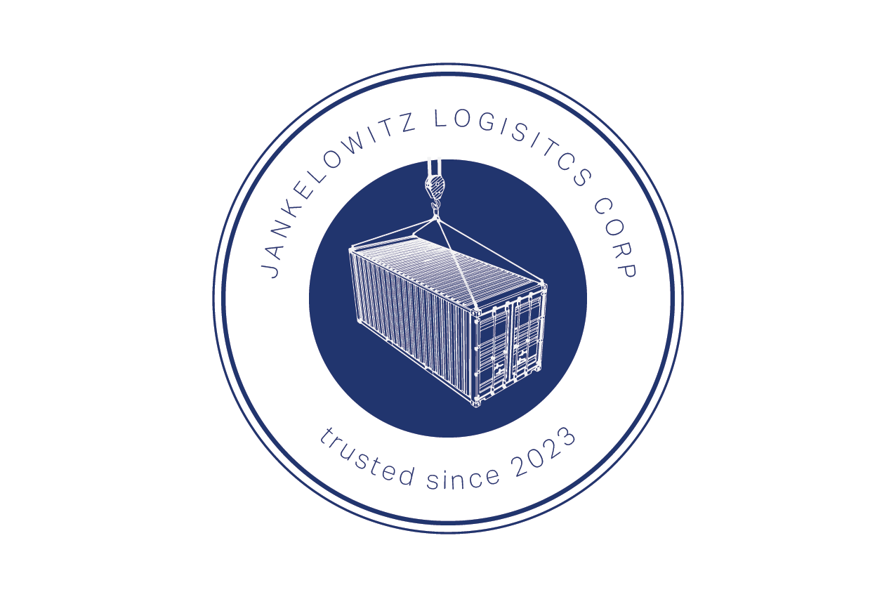
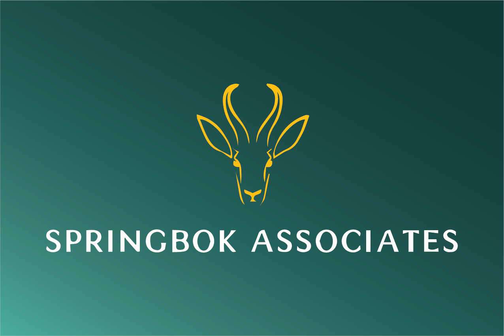

Diversified holding company
Institutional polish. Unreasonable breadth.
Jankelowitz Group is a multi-vertical operating platform built to acquire, brand, govern, and occasionally explain a portfolio of highly strategic businesses.



Centralized strategy for an increasingly expansive corporate ecosystem.
Operating model
Four core platforms. One aggressively coordinated brand architecture.
Jankelowitz Group combines holding-company discipline with the flexible operating style of an organization that can invent a committee for almost any situation.
Portfolio governance
Centralized oversight, clean reporting lines, and formalized accountability frameworks designed to preserve the appearance of control.
Brand architecture
Each operating company maintains a distinct identity, logo system, and corporate voice while remaining loosely aligned to Group-level priorities.
Cross-platform synergy
Finance, procurement, logistics, advisory, beverage, media, and travel capabilities are integrated when convenient and separately managed when not.
Core platforms
Built to look established from a safe distance.